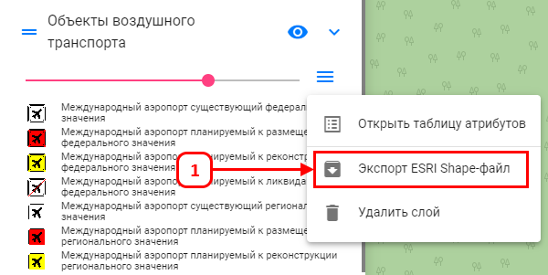
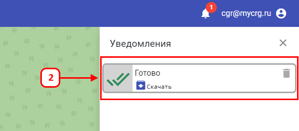

<p>Чтобы выгрузить слой в формате shp:</p>

<ol>
  <li>
    В списке слоёв нажмите правой кнопкой мыши на <b>текущий</b> слой, в появившемся окне выберите
    <i>«Экспорт ESRI Shape-файл»</i>.
    
  </li>
  <li>
    Открылась форма <i>«Уведомления»</i>. Найдите его в списке и нажмите <i>«Скачать»</i>.
    
  </li>
</ol>
